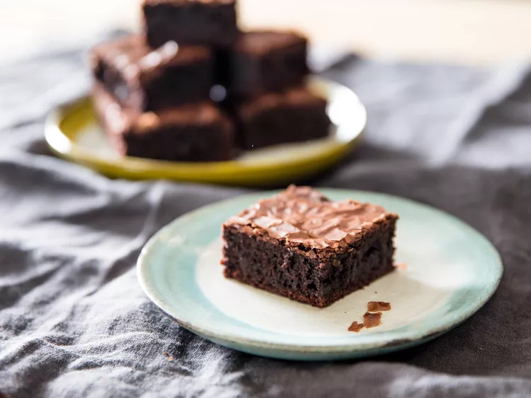

Brownies Recipe

Delicious Fudgy brownies recipe from Serious Eats
This is a recipe for brownies from Serious Eats
Ingredient List
- 12 ounces unsalted butter (about 3 sticks; 340g)
- 6 ounces finely chopped dark chocolate, about 72% (about 1 cup; 170g)
- 16 ounces granulated sugar (about 2 1/4 cups; 450g)
- 2 ounces light brown sugar (about 1/4 cup, packed; 55g)
- 1 3/4 teaspoons (4g) Diamond Crystal kosher salt; for table salt, use about
half as much by volume or the same weight
- 6 large eggs, straight from the fridge (about 10 1/2 ounces; 295g)
- 1/2 ounce vanilla extract (about 1 tablespoon; 15g)
- 1 teaspoon instant espresso powder, such as Medaglia d’Oro (optional)
- 4 1/2 ounces all-purpose flour, such as Gold Medal
(about 1 cup, spooned; 125g)
- 4 ounces Dutch-process cocoa powder, such as Cacao Barry Extra Brute
(about 1 1/3 cups, spooned; 115g)
Steps
- Getting Ready: Adjust oven rack to middle position and preheat to 350°F
(180°C). Line a 9- by 13- by 2-inch anodized aluminum baking pan with foil
to cover the bottom and long sides of the pan. (It's all right to leave
the short sides exposed.) If you like, grease lightly with pan spray.
- In a 3-quart stainless steel saucier, melt butter over medium-low heat.
When it has completely melted, increase heat to medium and simmer,
stirring with a heat-resistant spatula while butter hisses and pops.
Continue cooking and stirring, scraping up any brown bits that form
inside the pan, until butter is golden yellow and perfectly silent
(see note). Remove from heat and stir in dark chocolate;
the mixture will seem quite thin.
- Making the Batter: Combine granulated sugar, brown sugar, salt,
eggs, vanilla, and instant espresso (if using) in the bowl of a
stand mixer fitted with the whisk attachment. Whip on medium-high
until extremely thick and fluffy, about 8 minutes.
(The whipping time can vary significantly depending on bowl size,
batter temperature, and mixer wattage, so use the visual cues
as your primary guide.)
- Meanwhile, sift together flour and cocoa powder. When the
foamed eggs are fluffy and thick, reduce speed to low and
pour in the warm chocolate-butter. Once it is incorporated,
add cocoa-flour mixture all at once and continue mixing until roughly combined.
Finish with a flexible spatula, scraping and folding to ensure batter
is well mixed from the bottom up.
- Pour into prepared pan and bake until brownies are glossy and just
barely firm, about 30 minutes, or to an internal temperature of 205°F
(96°C). (Take care that the probe is inserted at a sharp angle to
avoid touching the bottom of the pan.) The timing of this recipe is
based on anodized aluminum and will vary significantly with
glass, ceramic, or nonstick pans, materials that will also affect
the brownies' consistency.
- Cool brownies to room temperature to allow their
crumb to set before slicing. Slide a butter knife between the
brownies and the short ends of the pan; gently tug on the foil,
then lift to remove the brownies from the pan. Cut into
24 two-and-a-half-inch squares and store in an airtight container
with a sheet of wax paper between layers, about 1 week at room temperature.
Original recipe
Home